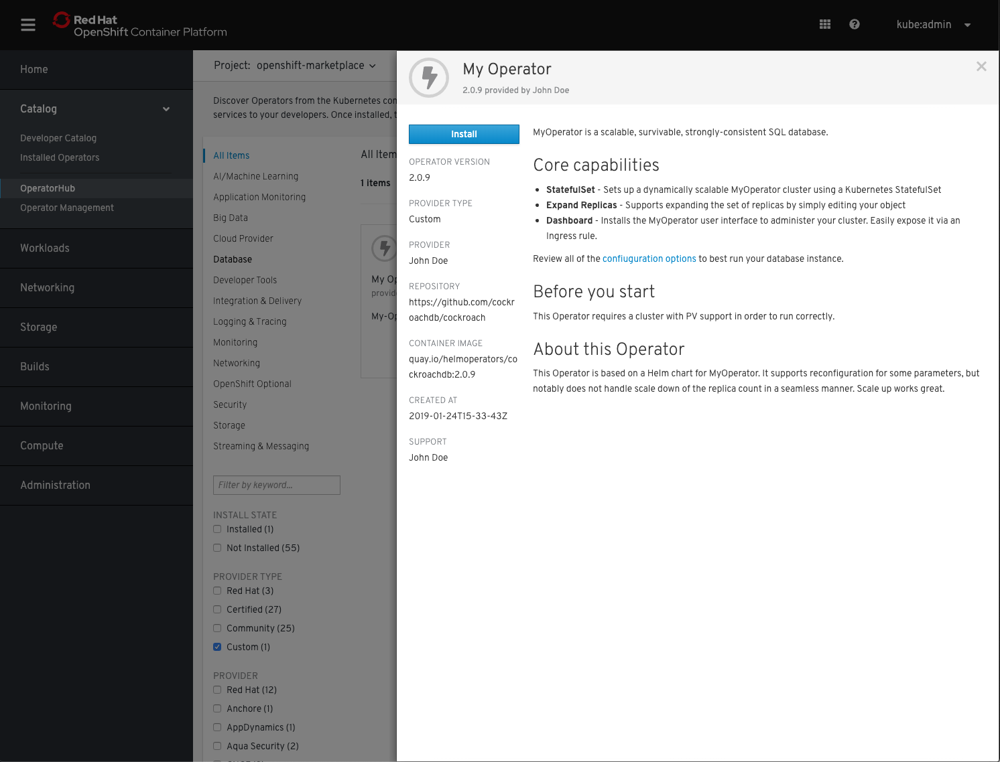
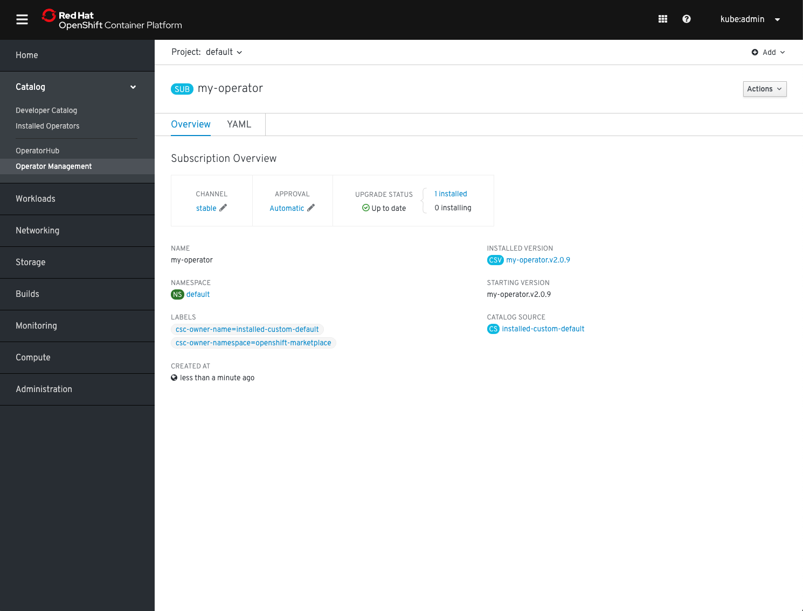
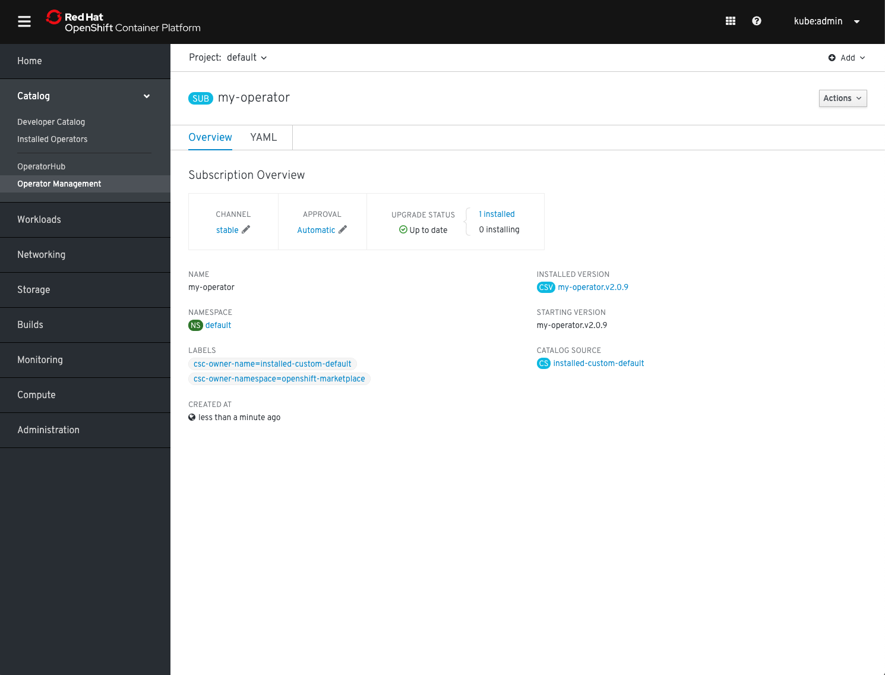
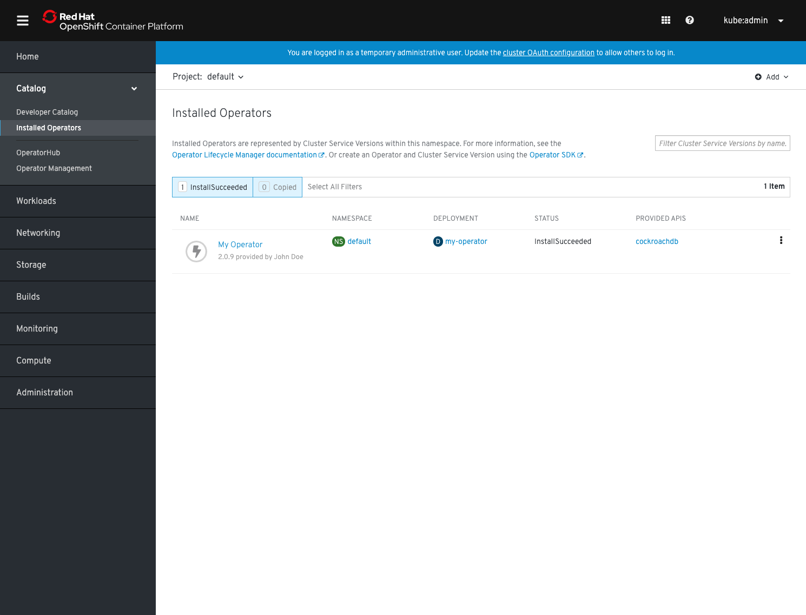

Testing your Operator with Operator Framework
Overview
These instructions walk you through how to manually test that your Operator deploys correctly with Operator Framework, when packaged for the Operator Lifecycle Manager. Although your submission will always be tested as part of the CI you can accelerate the process by testing locally.
The tests described in this document can also be executed automatically in a single step using a test suite
A previous version of this document required quay.io,
operator-courierandoperator-marketplaceto conduct the tests. This is no longer required.
Accepted Contribution formats
The process below assumes that you have a Kubernetes Operator in either of the two following formats supported by the Operator Framework:
packagemanifest format (mandatory for all OLM versions prior to 0.14.0 and earlier, supported on all available versions)
$ tree my-operator/
my-operator
├── 0.1.0
│ ├── my-operator-crd1.crd.yaml
│ ├── my-operator-crd2.crd.yaml
│ └── my-operator.v0.1.0.clusterserviceversion.yaml
├── 0.5.0
│ ├── my-operator-crd1.crd.yaml
│ ├── my-operator-crd2.crd.yaml
│ ├── my-operator-crd3.crd.yaml
│ └── my-operator.v0.5.0.clusterserviceversion.yaml
├── 1.0.0
│ ├── my-operator-crd1.crd.yaml
│ ├── my-operator-crd2.crd.yaml
│ ├── my-operator-crd3.crd.yaml
│ └── my-operator.v1.0.0.clusterserviceversion.yaml
└── my-operator.package.yaml
bundle format (supported with 0.14.0 or newer)
$ tree my-operator/
my-operator
├── 0.1.0
│ ├── manifests
│ │ ├── my-operator-crd1.crd.yaml
│ │ ├── my-operator-crd2.crd.yaml
│ │ ├── my-operator-crd3.crd.yaml
│ │ └── my-operator.v0.1.0.clusterserviceversion.yaml
│ ├── metadata
│ │ └── annotations.yaml
│ └── Dockerfile
├── 0.5.0
│ ├── manifests
│ │ ├── my-operator-crd1.crd.yaml
│ │ ├── my-operator-crd2.crd.yaml
│ │ ├── my-operator-crd3.crd.yaml
│ │ └── my-operator.v0.5.0.clusterserviceversion.yaml
│ ├── metadata
│ │ └── annotations.yaml
│ └── Dockerfile
└── 1.0.0
├── manifests
│ ├── my-operator-crd1.crd.yaml
│ ├── my-operator-crd2.crd.yaml
│ ├── my-operator-crd3.crd.yaml
│ └── my-operator.v1.0.0.clusterserviceversion.yaml
├── metadata
│ └── annotations.yaml
└── Dockerfile
...
In both examples above my-operator is the name of your Operator which is available in 3 versions: 0.1.0, 0.5.0 and 1.0.0. If you are new to this or you don't have this format yet, refer to our contribution documentation. We will refer to both formats distinctively below where required.
Mixing
packagemanifeststyle andbundleformat style Operator versions in a single Operator package is not supported. All versions all need to be in either one or the other format.
Pre-Requisites
Kubernetes cluster
For "upstream-community" operators targeting Kubernetes and OperatorHub.io: * A running Kubernetes cluster; minikube or Kubernetes-in-Docker is the simplest approach
For "community" operators targeting OCP/OKD and OperatorHub on OpenShift: * access to a running production-like OpenShift 4 cluster, use try.openshift.com to get a cluster on infrastructure of your choice * or access to all-in-one OpenShift 4 cluster, use CodeReady Containers to get a cluster on your local machine
Container Tooling
You need an OCI compatible container toolchain on the system where you test your Operator. Support options are:
Operator Framework components
The following parts of the framework are used throughout the process and should be downloaded and put in your executable search path (Linux and Mac are supported):
Preparing file structure
Finally, if you haven't already done so, please clone this repository as well and create a branch:
git clone https://github.com/operator-framework/community-operators.git
cd community-operators/
git branch my-operator
For simplicity (and if your Operator has dependencies on other community Operators) put your my-operator directory in either of the community-operators (for OpenShift's OperatorHub) or upstream-community-operators (for OperatorHub.io) directory (or both).
cp -R my-operator/ community-operators/upstream-community-operators/
The name of the directory
my-operator/needs to match the Operator package name (without the slash) in eitherpackage.yaml(if you are using thepackagemanifestformat) or the container image labeloperators.operatorframework.io.bundle.package.v1in theDockerfileandannotations.yaml(if you are using thebundleformat).
If you are just adding a new version of your Operator, please create a subdirectory following semver conventions in your existing package directory, for example:
cp -R my-operator/2.0.0 community-operators/upstream-community-operators/my-operator/
If you are using the
packagemanifestformat, don't forget to update thepackage.yamlfile in the top-level directory to point to your new version/channels.
Operator Metadata Validation
If you are using packagemanifest format you will need to convert your metadata to bundle format for the validation step. In theory the previous operator-courier tool still works but it is no longer maintained.
Temporary conversion of packagemanifest to bundle
Suppose v2.0.0 is the version of the Operator you want to test convert to bundle format directory with the opm tool:
mkdir /tmp/my-operator-2.0.0-bundle/
cd /tmp/my-operator-2.0.0-bundle/
opm alpha bundle build --directory /path/to/my-operator/2.0.0/ --tag my-operator-bundle:v2.0.0 --output-dir .
This will have generated the bundle format layout in the current working directory /tmp/my-operator-2.0.0-bundle/:
$ tree .
/tmp/my-operator-2.0.0-bundle/
├── manifests
│ ├── my-operator-crd1.crd.yaml
│ ├── my-operator-crd2.crd.yaml
│ ├── my-operator-crd3.crd.yaml
│ └── my-operator.v2.0.0.clusterserviceversion.yaml
├── metadata
│ └── annotations.yaml
└── bundle.Dockerfile
Run the following validation command of the operator-sdk from within this directory.
operator-sdk bundle validate /tmp/my-operator-2.0.0-bundle/ --select-optional name=operatorhub
Using operator-sdk to validate your Operator
Validation using
operator-sdkis only supported using thebundleformat layout. See the previous step if you need to convert frompackagemanifest.
Validation is done on a per-Operator version basis. If you are not already in the Operator versions directory, switch to it now, e.g.
cd my-operator/2.0.0/
With the Operator in bundle format use the operator-sdk to validate your bundle with the additional rules for community submissions:
operator-sdk bundle validate --select-optional name=operatorhub .
The output might look similar to this:
INFO[0000] Found annotations file bundle-dir=. container-tool=docker
INFO[0000] Could not find optional dependencies file bundle-dir=. container-tool=docker
INFO[0000] All validation tests have completed successfully
If there are any errors or warnings they will be displayed there. The container-tool will be automatically determined given your environment. If you want to force to use podman instead of docker, supply the -b switch to the operator-sdk bundle validate command.
Any warnings here might turn into failing pipeline tests here. Please correct all issues displayed. A list of fields that are scanned can also be reviewed with this list.
Publishing your Operator metadata to a catalog for testing
Building a catalog using packagemanifest format
When your Operator metadata is formatted in packagemanifest layout you need to place it in the directory structure of the community-operators repository, according to pre-requisites step.
For example, assuming version 2.0.0 is the version you like to test:
$ tree upstream-community-operators/
upstream-community-operators/
│
...
│
└──my-operator/
├── 0.1.0
│ ├── my-operator-crd1.crd.yaml
│ ├── my-operator-crd2.crd.yaml
│ └── my-operator.v0.1.0.clusterserviceversion.yaml
├── 0.5.0
│ ├── my-operator-crd1.crd.yaml
│ ├── my-operator-crd2.crd.yaml
│ ├── my-operator-crd3.crd.yaml
│ └── my-operator.v0.5.0.clusterserviceversion.yaml
├── 1.0.0
│ ├── my-operator-crd1.crd.yaml
│ ├── my-operator-crd2.crd.yaml
│ ├── my-operator-crd3.crd.yaml
│ └── my-operator.v1.0.0.clusterserviceversion.yaml
├── 2.0.0
│ ├── my-operator-crd1.crd.yaml
│ ├── my-operator-crd2.crd.yaml
│ ├── my-operator-crd3.crd.yaml
│ └── my-operator.v2.0.0.clusterserviceversion.yaml
└── my-operator.package.yaml
You can build a catalog for OLM containing either all Operators or just yours with a Dockerfile like this
FROM quay.io/operator-framework/upstream-registry-builder as builder
COPY upstream-community-operators manifests
RUN /bin/initializer -o ./bundles.db
FROM scratch
COPY --from=builder /etc/nsswitch.conf /etc/nsswitch.conf
COPY --from=builder /bundles.db /bundles.db
COPY --from=builder /bin/registry-server /registry-server
COPY --from=builder /bin/grpc_health_probe /bin/grpc_health_probe
EXPOSE 50051
ENTRYPOINT ["/registry-server"]
CMD ["--database", "bundles.db"]
Simply adjust the second line to either include all OpenShift Community Operators (community-operators), or all OperatorHub.io Operators (upstream-community-operators) or just your Operator (e.g. upstream-community-operator/my-operator).
Place the Dockerfile in the top-level directory of your cloned copy of this repo, build it and push to a registry from where you can download it to your Kubernetes cluster later.
For example:
podman build -f catalog.Dockerfile -t my-test-catalog:latest .
podman tag my-test-catalog:latest quay.io/myaccount/my-test-catalog:latest
podman push quay.io/myaccount/my-test-catalog:latest
Building a catalog using bundles
When your Operator metadata is formatted in bundle layout you can optionally add it to the existing directory structure like described in the pre-requisites step. For building a catalog this is not required because with Operator bundles versions are incrementally added to an existing or empty catalog.
For example, assuming version 2.0.0 is the version you like to test:
$ tree my-operator/
my-operator/
├── 0.1.0
│ ├── manifests
│ │ ├── my-operator-crd1.crd.yaml
│ │ ├── my-operator-crd2.crd.yaml
│ │ ├── my-operator-crd3.crd.yaml
│ │ └── my-operator.v0.1.0.clusterserviceversion.yaml
│ ├── metadata
│ │ └── annotations.yaml
│ └── Dockerfile
├── 0.5.0
│ ├── manifests
│ │ ├── my-operator-crd1.crd.yaml
│ │ ├── my-operator-crd2.crd.yaml
│ │ ├── my-operator-crd3.crd.yaml
│ │ └── my-operator.v0.5.0.clusterserviceversion.yaml
│ ├── metadata
│ │ └── annotations.yaml
│ └── Dockerfile
├── 1.0.0
│ ├── manifests
│ │ ├── my-operator-crd1.crd.yaml
│ │ ├── my-operator-crd2.crd.yaml
│ │ ├── my-operator-crd3.crd.yaml
│ │ └── my-operator.v1.0.0.clusterserviceversion.yaml
│ ├── metadata
│ │ └── annotations.yaml
│ └── Dockerfile
└── 2.0.0
├── manifests
│ ├── my-operator-crd1.crd.yaml
│ ├── my-operator-crd2.crd.yaml
│ ├── my-operator-crd3.crd.yaml
│ └── my-operator.v2.0.0.clusterserviceversion.yaml
├── metadata
│ └── annotations.yaml
└── Dockerfile
...
Simply build your bundle using the Dockerfile that is part of every Operator bundle. If you are new to this format please consult the operator-registry documentation. If you used operator-sdk to develop your Operator you can also leverage its packaging tooling to create a bundle.
To build your bundle simply build the image and push it to a registry of your choice:
podman build -f 2.0.0/Dockerfile -t my-operator:v2.0.0 2.0.0/
podman push my-operator:v2.0.0 quay.io/myaccount/my-operator:v2.0.0
With the bundle published to a registry you can now leverage opm to add it to the existing catalog of community operators:
- for OpenShift this is
quay.io/openshift-community-operators/catalog:latest - for OperatorHub.io this is
quay.io/operatorhubio/catalog:latest
opm will create a catalog image with your Operator added, like so:
opm index add --bundles quay.io/myaccount/my-operator:v2.0.0 --from-index quay.io/operatorhubio/catalog:latest --tag quay.io/myaccount/my-test-catalog:latest
You then push the resulting catalog image to a registry of your choice as well:
podman push quay.io/myaccount/my-test-catalog:latest
opmalso supports multiple container tools via the-cswitch. You can also omit the final step to build the catalog image and instead output theDockerfilethat would be used. Consult the help output for that viaopm index add --help
You now have a catalog image available for OLM to install your Operator version from.
Testing Operator Deployment on Kubernetes
1. Installing Operator Lifecycle Manager
If you are not using OpenShift you first need to install the Operator Lifecycle Manager on your cluster.
The following steps assume you already have a running Kubernetes cluster that is currently selected as your current-context via kubectl. If you, you can quickly spin up a cluster using tools like KIND or minikube mentioned in the pre-requisites section , e.g.
kind create cluster
Install the Operator Lifecycle Manager using operator-sdk:
operator-sdk olm install
Verify that OLM installed correctly:
operator-sdk olm status
This should output something like the following:
INFO[0000] Fetching CRDs for version "0.16.1"
INFO[0000] Fetching resources for version "0.16.1"
INFO[0002] Successfully got OLM status for version "0.16.1"
NAME NAMESPACE KIND STATUS
operators.operators.coreos.com CustomResourceDefinition Installed
operatorgroups.operators.coreos.com CustomResourceDefinition Installed
installplans.operators.coreos.com CustomResourceDefinition Installed
clusterserviceversions.operators.coreos.com CustomResourceDefinition Installed
olm-operator olm Deployment Installed
subscriptions.operators.coreos.com CustomResourceDefinition Installed
olm-operator-binding-olm ClusterRoleBinding Installed
operatorhubio-catalog olm CatalogSource Installed
olm-operators olm OperatorGroup Installed
aggregate-olm-view ClusterRole Installed
catalog-operator olm Deployment Installed
aggregate-olm-edit ClusterRole Installed
olm Namespace Installed
global-operators operators OperatorGroup Installed
operators Namespace Installed
packageserver olm ClusterServiceVersion Installed
olm-operator-serviceaccount olm ServiceAccount Installed
catalogsources.operators.coreos.com CustomResourceDefinition Installed
system:controller:operator-lifecycle-manager ClusterRole Installed
Troubleshooting
If any problems are encountered at this step, verify that you have enough permissions to install OLM (you need to be cluster-admin to register its CRDs) and create an issue in the OLM tracker.
2. Adding the catalog containing your Operator
Create a CatalogSource instance in the olm namespace to reference in the Operator catalog image that contains your Operator version to test:
apiVersion: operators.coreos.com/v1alpha1
kind: CatalogSource
metadata:
name: my-test-catalog
namespace: olm
spec:
sourceType: grpc
image: quay.io/myaccount/my-test-catalog:latest
Deploy the CatalogSource resource:
kubectl apply -f catalog-source.yaml
If you created your test catalog containing all existing community operators, you should delete the default catalog that OLM ships with to avoid a lot of duplicate entries:
kubectl delete catalogsource operatorhubio-catalog -n olm
Verify your custom catalog got loaded:
$ kubectl get catalogsource -n olm
NAME DISPLAY TYPE PUBLISHER AGE
my-test-catalog grpc 3m32s
[...]
Verify the health of your catalog:
kubectl get catalogsource my-test-catalog -n olm -o yaml
Troubleshooting
The status section of that object have the lastObservedState condition set to READY. If that is not the case (for example if the condition is set to CONNECTING) check the healthiness of the pod associated to the catalog in the same namespace.
kubectl get pod -n olm
The name of the pod will carry the name of the CatalogSource object plus 5 random characters. Usually the source of unhealthy catalogs is catalog pods with pull errors due to missing authentication against the registry or non-existent tags.
If the pod is actually running check its logs:
kubectl logs my-test-catalog-zcq7h -n olm
If there are errors in this log please raise them in the operator-registry issue tracker as any problems caused by malformed bundle/packagemanifest metadata should have been caught during catalog creation.
3. View Available Operators
Inspect the list of loaded packagemanifests on the system with the following command to filter for your Operator
kubectl get packagemanifests | grep my-operator
The example should look like this:
grep my-operator 1h2m
If your Operator appears in this list, the catalog was successfully parsed and the Operator is now available to install.
Troubleshooting
If it does not appear in this list return to the previous step and check the logs of the catalog pod. If this does not reveal any error messages check the log of both the packageserver pods of OLM in the olm namespace, e.g.:
kubectl get logs packageserver-78c99949df-lf26p -n olm
In some occassions the Operator definition is in the catalog but cannot be understood due to some malformed package/bundle content. This case the packageserver should present a related error message.
If there are errors in this log please raise them in the operator-registry issue tracker as any problems caused by malformed bundle/packagemanifest metadata should have been caught during catalog creation.
4. Create an OperatorGroup
An OperatorGroup is used to denote which namespaces your Operator should be watching. It must exist in the namespace where your operator should be deployed, we'll use default in this example.
Its configuration depends on whether your Operator supports watching its own namespace, a single other namespace or all namespaces (as indicated by spec.installModes in the CSV).
Create the following file as operator-group.yaml if your Operator supports watching its own or a single namespace.
If your Operator supports watching all namespaces you can skip this step and proceed to creating the
Subscriptionobject in theoperatorsnamespace. AnOperatorGroupalready exists there withspec.targetNamespaceempty. This kind ofOperatorGroupinstructs the Operator to watch all namespaces.
apiVersion: operators.coreos.com/v1alpha2
kind: OperatorGroup
metadata:
name: my-operatorgroup
namespace: default
spec:
targetNamespaces:
- default
Deploy the OperatorGroup resource:
kubectl apply -f operator-group.yaml
5. Create a Subscription
The last steps is to ask OLM to install your Operator. A Subscription is created to represent the intent to install an Operator and keep it updated (automatically even) with newer version from the catalog. This requires you to tell OLM which Operator, in which version from which channel you want to install and where the catalog is, that contains the Operator.
Save the following to a file named: operator-subscription.yaml:
apiVersion: operators.coreos.com/v1alpha1
kind: Subscription
metadata:
name: my-operator-subscription
namespace: default
spec:
channel: <channel-name>
name: my-operator
startingCSV: my-operator.v2.0.0
source: my-test-catalog
sourceNamespace: olm
If your Operator supports watching all namespaces, change the namespace of the namespace of the Subscription from default to operators. (This namespace already has an OperatorGroup).
In any case replace <channel-name> with the contents of channel.name in your package.yaml file if you have the packagemanifest format or with the contents from operators.operatorframework.io.bundle.channels.v1 in annotations.yaml if you have the bundle format.
Then create the Subscription:
kubectl apply -f operator-subscription.yaml
Troubleshooting
Note that the Subscription object is not representing your installed Operator (this is the object in the next step). It only intructs OLM to install your Operator and keep it updated (automatically). Any error message in the Subscription status refers to the attempt to install the Operator from the catalog, which is usually caused by incorrect references to the catalog (types in the name of the Operator, catalog, namespace, etc).
6. Verify Operator health
Watch your Operator being deployed by OLM from the catalog with the following command. Change the namespace from default to operators if you installed your Subscrption there. Use the watch switch -w:
$ kubectl get clusterserviceversion -n default -w
NAME DISPLAY VERSION REPLACES PHASE
my-operator.v2.0.0 My Operator 2.0.0 my-operator.v1.0.0
my-operator.v2.0.0 My Operator 2.0.0 my-operator.v1.0.0
my-operator.v2.0.0 My Operator 2.0.0 my-operator.v1.0.0
my-operator.v2.0.0 My Operator 2.0.0 my-operator.v1.0.0 Pending
my-operator.v2.0.0 My Operator 2.0.0 my-operator.v1.0.0 InstallReady
my-operator.v2.0.0 My Operator 2.0.0 my-operator.v1.0.0 Installing
my-operator.v2.0.0 My Operator 2.0.0 my-operator.v1.0.0 Installing
my-operator.v2.0.0 My Operator 2.0.0 my-operator.v1.0.0 Installing
my-operator.v2.0.0 My Operator 2.0.0 my-operator.v1.0.0 Installing
my-operator.v2.0.0 My Operator 2.0.0 my-operator.v1.0.0 Succeeded
The ClusterServiceVersion object represents your installed Operator per version. It can take a couple of seconds to be created as part of the Subscription request. There will always be a ClusterServiceVersion in the namespace of the Subscription. If the OperatorGroup was configured to "watch" a list or all namespaces, the ClusterServiceVersion object will be copied to all those namespaces. This might take additional time (usually around 30 secs).
If the above command succeeds and the ClusterServiceVersion has transitioned to the Succeeded phase you will also find your Operator's Deployment(s) in the same namespace where the Subscription is. This is your Operator running:
kubectl get deployment -n default
Troubleshooting
If the ClusterServiceVersion is in a pending or failed state, problems occurred when trying to install the Operator. There are two common sources: the components that make up the Operator and the Operator binary itself.
Problems with the Operator process itself will result in a Deployment that is unhealthy, either due to a crashing Operator pod or other image level problems. In this case debug the Deployment and Operator logs for any error message. Usually there are either bugs in the Operator or insufficient permissions in the RBAC part of the bundle/package metadata which may crash poorly written Operators.
Problems with installing the Operator components can be debugged with the InstallPlan object. It contains a blueprint of the Operator and lists all the Kubernetes resources that are required for the Operator to function. It is automatically created by OLM and linked to the Subscription. If the Subscription created an InstallPlan you can refer to via the status block of the Subscription: .status.InstallPlan contains the name of the InstallPlan object which is always in the same namespace as the Subscription.
kubectl describe subscription my-operator-subscription -n default
...
Status:
...
Installplan:
API Version: operators.coreos.com/v1alpha1
Kind: InstallPlan
Name: install-2c8lf
Uuid: 656e2e6b-582a-46e1-867d-4f7e95c24136
Last Updated: 2020-11-01T19:38:01Z
State: AtLatestKnown
Events: <none>
kubectl describe installplan install-2c8lf -n default
This will likely be a lengthy output due to the content of every component of the Operator returned. However, in the .status block of this object the name and health of every component is displayed. Problems with InstallPlan components usually stem from malformed components, insufficient permissions, collisions with existing objects etc. It usually needs to be corrected at the Operator metadata level.
Testing Operator Deployment on OpenShift
The process to test on OpenShift Container Platform and OKD 4.3 or newer is exactly the same as described above with the exception that OLM is already installed. You can use the same CLI steps to test your Operator but it can however also be done via the UI.
1. Create the CatalogSource
Create a CatalogSource instance in the openshift-marketplace namespace to reference the Operator catalog image that contains your Operator version to test:
apiVersion: operators.coreos.com/v1alpha1
kind: CatalogSource
metadata:
name: my-test-catalog
namespace: openshift-marketplace
spec:
sourceType: grpc
image: quay.io/myaccount/my-test-catalog:latest
You can use the OpenShift Console YAML editor for that or deploy the CatalogSource resource on the CLI:
oc apply -f catalog-source.yaml
If you created your test catalog containing all existing community operators, you should delete the default catalog that OLM ships with to avoid a lot of duplicate entries. To do this navigate to Administration on the main navigation bar on the left and select the Cluster Settings item. In this view, select the Global Configuration tab and filter for OperatorHub:

Click on the OperatorHub item and select the YAML tab. In the YAML editor set the disabled property for the community-catalog to true:

Click Save.
2. Find your Operator in the OperatorHub UI
Go to your OpenShift UI and find your Operator by filtering for the Custom category:

3. Install your Operator from OperatorHub
To install your Operator simply click its icon and in the proceeding dialog click Install.

You will be asked where to install your Operator. Select either of the desired installation modes, if your Operator supports it and then click Subscribe
 You will be forwarded to the Subscription Management section of the OLM UI and after a couple of moments your Operator will be transitioning to Installed.

You will be forwarded to the Subscription Management section of the OLM UI and after a couple of moments your Operator will be transitioning to Installed.

4. Verify Operator health
Change to the Installed Operators section in the left-hand navigation menu to verify your Operator's installation status:  It should have transitioned into the state InstallationSucceeded. You can now test it by starting to use its APIs.
Testing with scorecard
If your Operator is up and running you can verify it is working as intended using its APIs. Additionally you can run operator-sdk's scorecard utility for validating against good practice and correctness of your Operator.
Assuming you are still in your top-level directory where my-operator/ is your bundle location following these instructions to test your Operator using the Operator-SDK: Running your Operator with scorecard